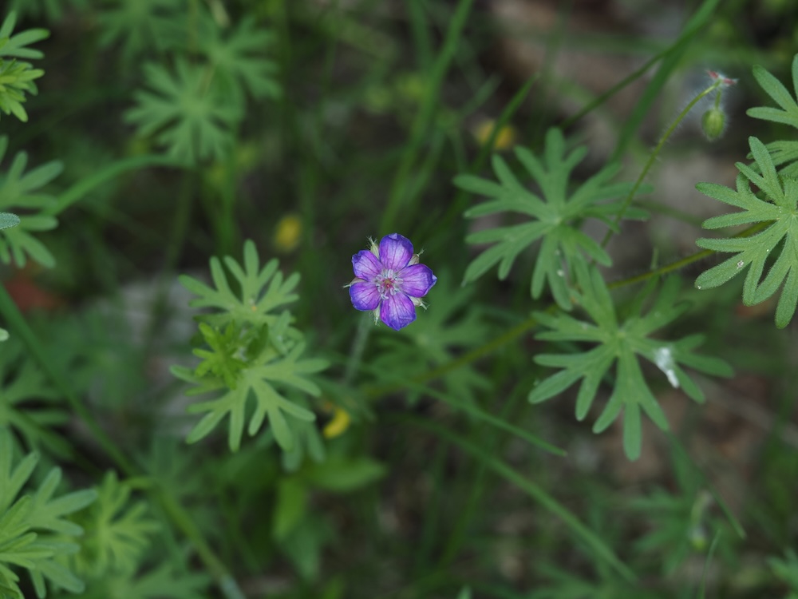
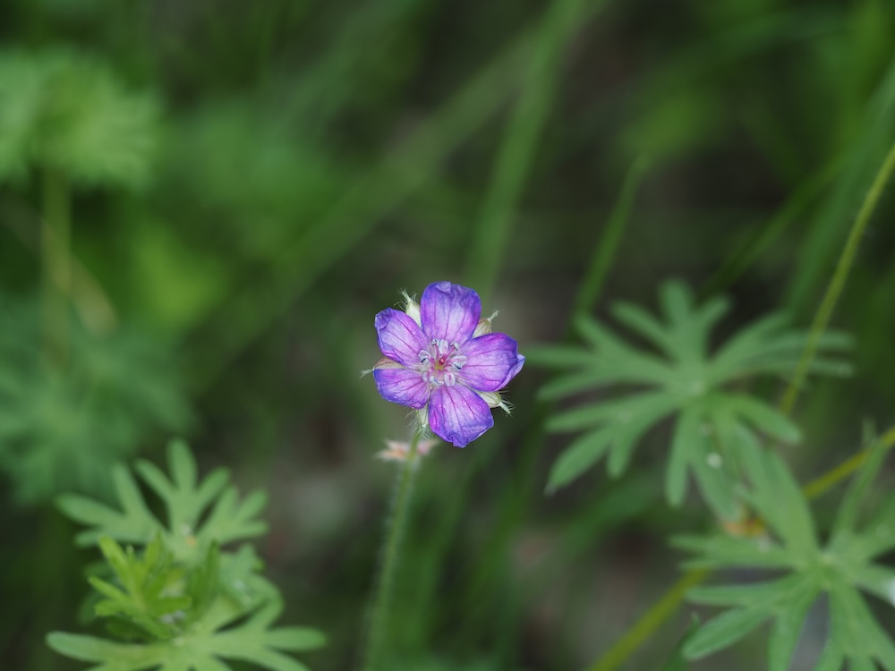

Mini-Storchschnabel mit handförmig zerschlitzten Blättern — überall, aber leicht zu übersehen.



Die fein zerschlitzten Blätter
Was diesen Storchschnabel so einzigartig macht, sind die Blätter: handförmig in 5–7 schmale, tief eingeschnittene Lappen geteilt — daher „dissectum“ (= zerschnitten). Das ergibt eine elegante, fast farnähnliche Optik. Diese Form reduziert die Verdunstung und ermöglicht der Pflanze, auch in sonnigen, trockenen Lagen zu überleben.
Das Acker-Storchschnabel-Spiel
In Mitteleuropa gibt es etwa 8–10 Storchschnabel-Arten, die sich oberflächlich ähneln. G. dissectum unterscheidet sich durch: kleine Blüten (1 cm), tief zerschlitzte Blätter, niedrige Wuchsform, häufig auf gestörten Böden (Acker, Wegrand). Die größeren Wiesen- und Sumpf-Storchschnäbel sehen ganz anders aus.
Wissenswertes & Merksätze
Erkennen leicht gemacht
Niederliegend-aufsteigender Stängel (20–50 cm), oft rötlich überlaufen. Blätter handförmig in 5–7 schmale Lappen tief zerschlitzt. Blüten klein (1 cm), rosa bis violett, fünf Blütenblätter. Schoten lang, später schnabelartig gekrümmt.
Unterscheidung von G. pusillum
Sehr ähnlich ist der Zwerg-Storchschnabel (G. pusillum) — noch kleinere Blüten, weniger zerschlitzte Blätter. Beide auf Äckern. Wer einen kleinen Storchschnabel mit deutlich „fingerig“ zerschlitzten Blättern sieht: G. dissectum.